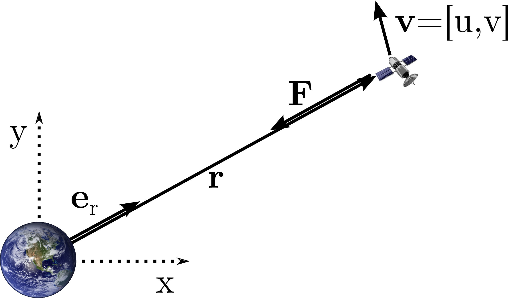

In this exercise we will play a little with Netwon's law of gravitation in two dimensions. Figure 1 shows a satellite in a trajectory around the Earth. We want to find out how the satellite's trajectory looks like, given a starting point and a corresponding starting velocity.

The differential equation for this problem we can get from Newton's law of gravitation: $$ \begin{equation} \boldsymbol{F}=-G\frac{Mm}{r^2}\boldsymbol{e}_r \label{eq:Newton} \end{equation} $$ Here \( \boldsymbol{F}=[F_x,F_y] \) is the force on the satellite from the Earth, \( G \) is the gravitational constant, \( M \) is the mass of the Earth, \( r \) is the distance between the centre of the Earth and the satellite and \( \boldsymbol{e}_r \) is a (unit) directional vector in the direction of the satellite from the centre of the Earth (see Figure 1). We are modelling the Earth and the satellite as point masses, and we pretend that the Earth is not moving. We define a coordinate system with the origin in the centre of the Earth, and let the \( x \)- and \( y \)-axes point as shown in the figure. The position of the satellite in this system is given by the vector \( \boldsymbol{r}=[x,y] \), with length \( r=\sqrt{x^2+y^2} \), and the velocity is given by \( \boldsymbol{v}=[u,v] \). Now we have that \( \boldsymbol{e}_r=\frac{\boldsymbol{r}}{r} \), and can thus write \eqref{eq:Newton} as $$ \begin{equation} \boldsymbol{F}=-G\frac{Mm}{r^3}\boldsymbol{r} \label{eq:Newton2} \end{equation} $$
which on component form becomes $$ \begin{align} F_x=-G\frac{Mmx}{(\sqrt{x^2+y^2})^3} \label{eq:Newton_xcomponent} \\ F_y=-G\frac{Mmy}{(\sqrt{x^2+y^2})^3} \label{eq:Newton_ycomponent} \end{align} $$
From Newton's 2nd law we have that \( \boldsymbol{F}=m\boldsymbol{a} \), where \( \boldsymbol{a}=[\ddot{x},\ddot{y}] \) is the acceleration vector of the satellite. Together with \eqref{eq:Newton_xcomponent} and \eqref{eq:Newton_ycomponent} this gives the following ODE's: $$ \begin{align} \ddot{x}=-G\frac{Mx}{(\sqrt{x^2+y^2})^3} \label{eq:ode_xcomponent} \\ \ddot{y}=-G\frac{My}{(\sqrt{x^2+y^2})^3} \label{eq:ode_ycomponent} \end{align} $$
This is the non-linear ODE's we need to solve to find \( x(t) \) and \( y(t) \). The initial conditions are \( x(t_0)=x_0 \), \( y(t_0)=y_0 \), \( u(t_0)=u_0 \) and \( v(t_0)=v_0 \).
In the following problems we set \( MG=1 \).
Equations \eqref{eq:ode_xcomponent} and \eqref{eq:ode_ycomponent} are a system of two 2nd order ODE's. Write them as a system of four 1st order ODE's. Write them on the form $$ \begin{align} \dot{\boldsymbol{g}} &= \boldsymbol{f}(g_0,g_1,g_2,g_3) & \boldsymbol{g}(t_0) &= \boldsymbol{a} \label{eq:system} \end{align} $$
Write a Python programme that solves the system in \eqref{eq:system} using the generalized second order scheme (see lecture notes).
a) Use the initial values \( x_0=1.0 \), \( y_0=0.0 \), \( u_0=0.0 \) and \( v_0=0.7 \), and a time step \( \Delta t=0.01 \). Compute and plot the satellite trajectory from \( t=t_0=0 \) to \( t=t_{\text{max}}=3.0 \) using the mid point method (\( a_1=0 \), \( a_2=1 \), \( p_1=0.5 \), \( p_2=0.5 \)) and Ralston's method (\( a_1=2/3 \), \( a_2=1/3 \), \( p_1=3/4 \), \( p_2=3/4 \)).
b) Extend the program to include the Euler solver from Pexercise 2. Compute the trajectory up to a time of \( t=10.0 \) using Euler's method, the mid point method and Ralston's method. Plot the trajectories together and explain what you observe.
c) Change the time step to \( \Delta t=0.001 \) and plot the trajectories together again. What is changed, and why?
d) Change the initial conditions to \( x_0=1.0 \), \( y_0=0.0 \), \( u_0=0.0 \) and \( v_0=1.5 \). How does the trajectory look now? What is happening?
Test the convergence of the scheme implemented in Problem 2: Generalized second order scheme. Start with the program ODEschemes.py in the Digital Compendium (http://lrhgit.github.io/tkt4140/allfiles/digital_compendium/._main021.html) and add your solver. Show that the scheme is of second order.